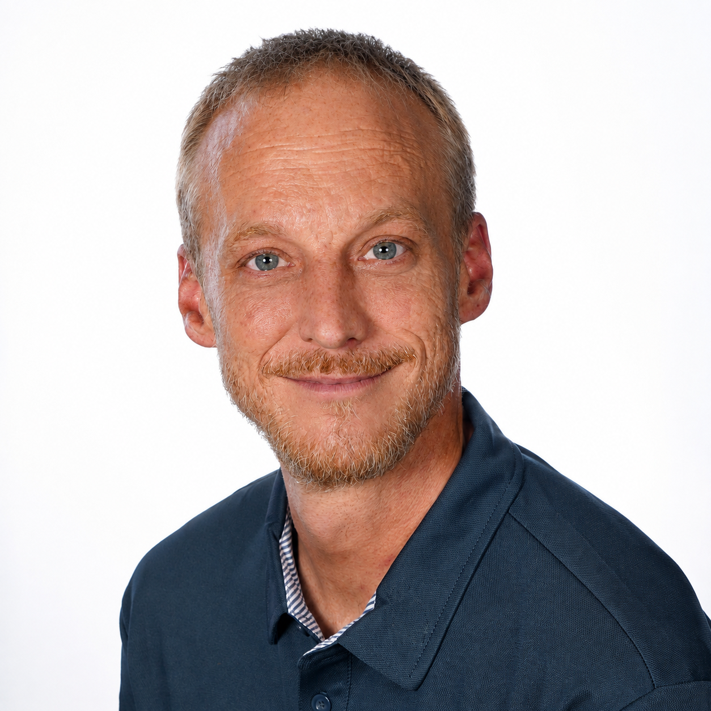

Über 20 Jahre technische Erfahrung
Technik, digitale Prozesse und neue Anwendungen begleiten mich seit vielen Jahren beruflich.

ÜBER MICH
Ich bin Alexander Birkicht und beschäftige mich seit vielen Jahren damit, Technik nicht nur zu verstehen, sondern sie auch verständlich zu vermitteln.
Beruflich arbeite ich seit über 20 Jahren in einem technischen Umfeld und habe dabei erlebt, wie schnell neue Technologien unseren Alltag und unsere Arbeitswelt verändern. Gleichzeitig habe ich gelernt: Technik muss nicht kompliziert sein. Entscheidend ist, dass jemand sie verständlich erklärt und zeigt, was man damit tatsächlich anfangen kann.
Als Referent steht für mich deshalb nicht die Theorie im Mittelpunkt, sondern das gemeinsame Ausprobieren. Meine Seminare sollen Berührungsängste abbauen, Neugier wecken und den Teilnehmerinnen und Teilnehmern etwas mitgeben, das sie anschließend selbst nutzen können.
Technik, digitale Prozesse und neue Anwendungen begleiten mich seit vielen Jahren beruflich.
Qualifiziert in Erwachsenenbildung, Moderation und praxisnaher Wissensvermittlung.
Keine Fachsprache um ihrer selbst willen. Entscheidend ist, dass jeder folgen und selbst ausprobieren kann.
WAS MICH ANTREIBT
Technik entwickelt sich schnell. Nicht jeder hatte die Gelegenheit, jeden Schritt mitzugehen – und niemand sollte sich deshalb abgehängt fühlen. Genau hier setzen meine Seminare an.
Ich möchte besonders Einsteigern und älteren Menschen zeigen, wie Smartphones, Computer und Künstliche Intelligenz den Alltag erleichtern können. Praxisnah, geduldig und mit Freude am gemeinsamen Erfolg.
Lernen wir uns kennen